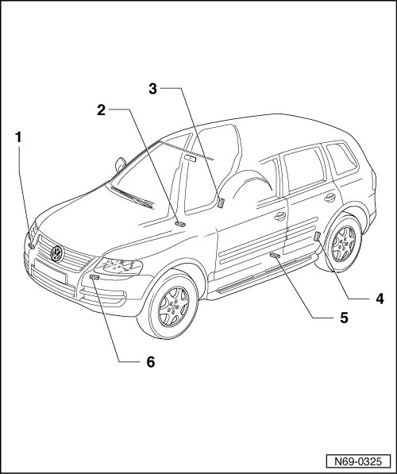

Impact Sensor: Locations
Crash Sensors Component Location Overview

1 Passengers front airbag crash sensor (G284)
• Removing --> [ Front Airbag Crash Sensors ] Front Airbag Crash Sensors
2 Crash sensor for side airbag, passenger side (G180)
• Removing --> [ Side Airbag Crash Sensors ] Side Airbag Crash Sensors
3 Right rear side airbag crash sensor (G257)
• Removing --> [ Rear Side Airbag Crash Sensors ] Rear Side Airbag Crash Sensors
4 Left rear side airbag crash sensor (G256)
• Removing --> [ Rear Side Airbag Crash Sensors ] Rear Side Airbag Crash Sensors
5 Crash sensor for side airbag, driver's side (G179)
• Removing --> [ Side Airbag Crash Sensors ] Side Airbag Crash Sensors
6 Drivers front airbag crash sensor (G283)
• Removing --> [ Front Airbag Crash Sensors ] Front Airbag Crash Sensors